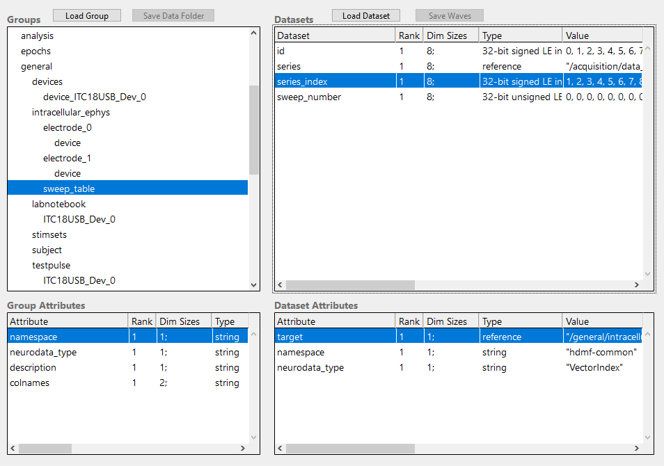

NWB version 2¶
Recent NWB (version 2) schema specifications are tracked in a separate repository. The schema is implemented in version 2.2.0 (62c73400565afc28f67ede4f2e86023c33167cf8).
The complete schema tree is described in a hdmf compatible format and replicated in this repository under namespace/{schema}/{yaml,json}/*. The JSON files are stored in the nwb file upon storage. A build script exists to generate the JSON files from their YAML files: update_specifications.sh.
The following deviations from NWB schema 2.2.0 were recorded:
ce4ff3351e9f3979e24f3620f5c3795e98556a58 ndx-MIES (v0.1.0~1)
ade50ef33446beb3c7df4c6f1072ae0e821b5115 specifications (2.9.0)
# diff namespace core upstream vs IPNWB specifications for nwb.base
# diff namespace core upstream vs IPNWB specifications for nwb.behavior
# diff namespace core upstream vs IPNWB specifications for nwb.device
# diff namespace core upstream vs IPNWB specifications for nwb.ecephys
# diff namespace core upstream vs IPNWB specifications for nwb.epoch
# diff namespace core upstream vs IPNWB specifications for nwb.file
# diff namespace core upstream vs IPNWB specifications for nwb.icephys
# diff namespace core upstream vs IPNWB specifications for nwb.image
# diff namespace core upstream vs IPNWB specifications for nwb.misc
# diff namespace core upstream vs IPNWB specifications for nwb.namespace
2,60c2,63
< - name: core
< doc: NWB namespace
< author:
< - Andrew Tritt
< - Oliver Ruebel
< - Ryan Ly
< - Ben Dichter
< - Keith Godfrey
< - Jeff Teeters
< contact:
< - ajtritt@lbl.gov
< - oruebel@lbl.gov
< - rly@lbl.gov
< - bdichter@lbl.gov
< - keithg@alleninstitute.org
< - jteeters@berkeley.edu
< full_name: NWB core
< schema:
< - namespace: hdmf-common
< - doc: This source module contains base data types used throughout the NWB data
< format.
< source: nwb.base.yaml
< title: Base data types
< - doc: This source module contains neurodata_types for device data.
< source: nwb.device.yaml
< title: Devices
< - doc: This source module contains neurodata_types for epoch data.
< source: nwb.epoch.yaml
< title: Epochs
< - doc: This source module contains neurodata_types for image data.
< source: nwb.image.yaml
< title: Image data
< - doc: Main NWB file specification.
< source: nwb.file.yaml
< title: NWB file
< - doc: Miscellaneous types.
< source: nwb.misc.yaml
< title: Miscellaneous neurodata_types.
< - doc: This source module contains neurodata_types for behavior data.
< source: nwb.behavior.yaml
< title: Behavior
< - doc: This source module contains neurodata_types for extracellular electrophysiology
< data.
< source: nwb.ecephys.yaml
< title: Extracellular electrophysiology
< - doc: This source module contains neurodata_types for intracellular electrophysiology
< data.
< source: nwb.icephys.yaml
< title: Intracellular electrophysiology
< - doc: This source module contains neurodata_types for opto-genetics data.
< source: nwb.ogen.yaml
< title: Optogenetics
< - doc: This source module contains neurodata_types for optical physiology data.
< source: nwb.ophys.yaml
< title: Optical physiology
< - doc: This source module contains neurodata_type for retinotopy data.
< source: nwb.retinotopy.yaml
< title: Retinotopy
< version: "2.9.0"
---
> - author:
> - Andrew Tritt
> - Oliver Ruebel
> - Ryan Ly
> - Ben Dichter
> - Keith Godfrey
> - Jeff Teeters
>
> contact:
> - ajtritt@lbl.gov
> - oruebel@lbl.gov
> - rly@lbl.gov
> - bdichter@lbl.gov
> - keithg@alleninstitute.org
> - jteeters@berkeley.edu
>
> doc: NWB namespace
>
> full_name: NWB core
>
> name: core
>
> schema:
> - namespace: hdmf-common
> - doc: This source module contains base data types used throughout the NWB data format.
> source: nwb.base
> title: Base data types
> - doc: This source module contains neurodata_types for device data.
> source: nwb.device
> title: Devices
> - doc: This source module contains neurodata_types for epoch data.
> source: nwb.epoch
> title: Epochs
> - doc: This source module contains neurodata_types for image data.
> source: nwb.image
> title: Image data
> - doc: Main NWB file specification.
> source: nwb.file
> title: NWB file
> - doc: Miscellaneous types.
> source: nwb.misc
> title: Miscellaneous neurodata_types.
> - doc: This source module contains neurodata_types for behavior data.
> source: nwb.behavior
> title: Behavior
> - doc: This source module contains neurodata_types for extracellular electrophysiology data.
> source: nwb.ecephys
> title: Extracellular electrophysiology
> - doc: This source module contains neurodata_types for intracellular electrophysiology data.
> source: nwb.icephys
> title: Intracellular electrophysiology
> - doc: This source module contains neurodata_types for opto-genetics data.
> source: nwb.ogen
> title: Optogenetics
> - doc: This source module contains neurodata_types for optical physiology data.
> source: nwb.ophys
> title: Optical physiology
> - doc: This source module contains neurodata_type for retinotopy data.
> source: nwb.retinotopy
> title: Retinotopy
>
> version: 2.9.0
# diff namespace core upstream vs IPNWB specifications for nwb.ogen
# diff namespace core upstream vs IPNWB specifications for nwb.ophys
# diff namespace core upstream vs IPNWB specifications for nwb.retinotopy
# diff namespace hdmf-common upstream vs IPNWB specifications for base
# diff namespace hdmf-common upstream vs IPNWB specifications for experimental
# diff namespace hdmf-common upstream vs IPNWB specifications for namespace
1d0
< # hdmf-schema-language=2.0.2
3,26d1
< - name: hdmf-common
< doc: Common data structures provided by HDMF
< author:
< - Andrew Tritt
< - Oliver Ruebel
< - Ryan Ly
< - Ben Dichter
< contact:
< - ajtritt@lbl.gov
< - oruebel@lbl.gov
< - rly@lbl.gov
< - bdichter@lbl.gov
< full_name: HDMF Common
< schema:
< - doc: base data types
< source: base.yaml
< title: Base data types
< - doc: data types for a column-based table
< source: table.yaml
< title: Table data types
< - doc: data types for different types of sparse matrices
< source: sparse.yaml
< title: Sparse data types
< version: 1.8.0
28,51c3,52
< - name: hdmf-experimental
< doc: Experimental data structures provided by HDMF. These are not guaranteed to be available in the future.
< author:
< - Andrew Tritt
< - Oliver Ruebel
< - Ryan Ly
< - Ben Dichter
< - Matthew Avaylon
< contact:
< - ajtritt@lbl.gov
< - oruebel@lbl.gov
< - rly@lbl.gov
< - bdichter@lbl.gov
< - mavaylon@lbl.gov
< full_name: HDMF Experimental
< schema:
< - namespace: hdmf-common
< - doc: Experimental data types
< source: experimental.yaml
< title: Experimental data types
< - doc: data types for storing references to web accessible resources
< source: resources.yaml
< title: Resource reference data types
< version: 0.5.0
---
> - author:
> - Andrew Tritt
> - Oliver Ruebel
> - Ryan Ly
> - Ben Dichter
> contact:
> - ajtritt@lbl.gov
> - oruebel@lbl.gov
> - rly@lbl.gov
> - bdichter@lbl.gov
> doc: Common data structures provided by HDMF
> full_name: HDMF Common
> name: hdmf-common
> schema:
> - doc: base data types
> source: base
> title: Base data types
> - doc: data types for a column-based table
> source: table
> title: Table data types
> - doc: data types for different types of sparse matrices
> source: sparse
> title: Sparse data types
> version: 1.8.0
>
> - author:
> - Andrew Tritt
> - Oliver Ruebel
> - Ryan Ly
> - Ben Dichter
> - Matthew Avaylon
> contact:
> - ajtritt@lbl.gov
> - oruebel@lbl.gov
> - rly@lbl.gov
> - bdichter@lbl.gov
> - mavaylon@lbl.gov
> doc: Experimental data structures provided by HDMF. These are not guaranteed to be available in the
> future.
> full_name: HDMF Experimental
> name: hdmf-experimental
> schema:
> - namespace: hdmf-common
> - doc: Experimental data types
> source: experimental
> title: Experimental data types
> - doc: data types for storing references to web accessible resources
> source: resources
> title: Resource reference data types
> version: 0.5.0
# diff namespace hdmf-common upstream vs IPNWB specifications for resources
# diff namespace hdmf-common upstream vs IPNWB specifications for sparse
# diff namespace hdmf-common upstream vs IPNWB specifications for table
# diff namespace ndx-mies upstream vs IPNWB specifications for namespace
# diff namespace ndx-mies upstream vs IPNWB specifications for ndx-mies.extensions
The most important core properties are for intracellular ephys.
groups:
- neurodata_type_def: PatchClampSeries
neurodata_type_inc: TimeSeries
doc: An abstract base class for patch-clamp data - stimulus or response,
current or voltage.
attributes:
- name: stimulus_description
dtype: text
doc: Protocol/stimulus name for this patch-clamp dataset.
- name: sweep_number
dtype: uint32
doc: Sweep number, allows to group different PatchClampSeries together.
required: false
datasets:
- name: data
dtype: numeric
dims:
- num_times
shape:
- null
doc: Recorded voltage or current.
attributes:
- name: unit
dtype: text
doc: Base unit of measurement for working with the data. Actual stored values are
not necessarily stored in these units. To access the data in these units,
multiply 'data' by 'conversion' and add 'offset'.
- name: gain
dtype: float32
doc: Gain of the recording, in units Volt/Amp (v-clamp) or Volt/Volt (c-clamp).
quantity: '?'
links:
- name: electrode
target_type: IntracellularElectrode
doc: Link to IntracellularElectrode object that describes the electrode that was
used to apply or record this data.
- neurodata_type_def: CurrentClampSeries
neurodata_type_inc: PatchClampSeries
doc: Voltage data from an intracellular current-clamp recording. A
corresponding CurrentClampStimulusSeries (stored separately as a stimulus) is
used to store the current injected.
datasets:
- name: data
doc: Recorded voltage.
attributes:
- name: unit
dtype: text
value: volts
doc: Base unit of measurement for working with the data. which is fixed to 'volts'.
Actual stored values are not necessarily stored in these units. To access the data in these units,
multiply 'data' by 'conversion' and add 'offset'.
- name: bias_current
dtype: float32
doc: Bias current, in amps.
quantity: '?'
- name: bridge_balance
dtype: float32
doc: Bridge balance, in ohms.
quantity: '?'
- name: capacitance_compensation
dtype: float32
doc: Capacitance compensation, in farads.
quantity: '?'
- neurodata_type_def: IZeroClampSeries
neurodata_type_inc: CurrentClampSeries
doc: Voltage data from an intracellular recording when all current
and amplifier settings are off (i.e., CurrentClampSeries fields will be zero).
There is no CurrentClampStimulusSeries associated with an IZero series because
the amplifier is disconnected and no stimulus can reach the cell.
attributes:
- name: stimulus_description
dtype: text
doc: An IZeroClampSeries has no stimulus, so this attribute is automatically set to "N/A"
value: N/A
datasets:
- name: bias_current
dtype: float32
value: 0.0
doc: Bias current, in amps, fixed to 0.0.
- name: bridge_balance
dtype: float32
value: 0.0
doc: Bridge balance, in ohms, fixed to 0.0.
- name: capacitance_compensation
dtype: float32
value: 0.0
doc: Capacitance compensation, in farads, fixed to 0.0.
- neurodata_type_def: CurrentClampStimulusSeries
neurodata_type_inc: PatchClampSeries
doc: Stimulus current applied during current clamp recording.
datasets:
- name: data
doc: Stimulus current applied.
attributes:
- name: unit
dtype: text
value: amperes
doc: Base unit of measurement for working with the data. which is fixed to 'amperes'.
Actual stored values are not necessarily stored in these units. To access the data in these units,
multiply 'data' by 'conversion' and add 'offset'.
- neurodata_type_def: VoltageClampSeries
neurodata_type_inc: PatchClampSeries
doc: Current data from an intracellular voltage-clamp recording. A
corresponding VoltageClampStimulusSeries (stored separately as a stimulus) is
used to store the voltage injected.
datasets:
- name: data
doc: Recorded current.
attributes:
- name: unit
dtype: text
value: amperes
doc: Base unit of measurement for working with the data. which is fixed to 'amperes'.
Actual stored values are not necessarily stored in these units. To access the data in these units,
multiply 'data' by 'conversion' and add 'offset'.
- name: capacitance_fast
dtype: float32
doc: Fast capacitance, in farads.
quantity: '?'
attributes:
- name: unit
dtype: text
value: farads
doc: Unit of measurement for capacitance_fast, which is fixed to 'farads'.
- name: capacitance_slow
dtype: float32
doc: Slow capacitance, in farads.
quantity: '?'
attributes:
- name: unit
dtype: text
value: farads
doc: Unit of measurement for capacitance_fast, which is fixed to 'farads'.
- name: resistance_comp_bandwidth
dtype: float32
doc: Resistance compensation bandwidth, in hertz.
quantity: '?'
attributes:
- name: unit
dtype: text
value: hertz
doc: Unit of measurement for resistance_comp_bandwidth, which is fixed to 'hertz'.
- name: resistance_comp_correction
dtype: float32
doc: Resistance compensation correction, in percent.
quantity: '?'
attributes:
- name: unit
dtype: text
value: percent
doc: Unit of measurement for resistance_comp_correction, which is fixed to 'percent'.
- name: resistance_comp_prediction
dtype: float32
doc: Resistance compensation prediction, in percent.
quantity: '?'
attributes:
- name: unit
dtype: text
value: percent
doc: Unit of measurement for resistance_comp_prediction, which is fixed to 'percent'.
- name: whole_cell_capacitance_comp
dtype: float32
doc: Whole cell capacitance compensation, in farads.
quantity: '?'
attributes:
- name: unit
dtype: text
value: farads
doc: Unit of measurement for whole_cell_capacitance_comp, which is fixed to 'farads'.
- name: whole_cell_series_resistance_comp
dtype: float32
doc: Whole cell series resistance compensation, in ohms.
quantity: '?'
attributes:
- name: unit
dtype: text
value: ohms
doc: Unit of measurement for whole_cell_series_resistance_comp, which is fixed to 'ohms'.
- neurodata_type_def: VoltageClampStimulusSeries
neurodata_type_inc: PatchClampSeries
doc: Stimulus voltage applied during a voltage clamp recording.
datasets:
- name: data
doc: Stimulus voltage applied.
attributes:
- name: unit
dtype: text
value: volts
doc: Base unit of measurement for working with the data. which is fixed to 'volts'.
Actual stored values are not necessarily stored in these units. To access the data in these units,
multiply 'data' by 'conversion' and add 'offset'.
- neurodata_type_def: IntracellularElectrode
neurodata_type_inc: NWBContainer
doc: An intracellular electrode and its metadata.
datasets:
- name: cell_id
dtype: text
doc: unique ID of the cell
quantity: '?'
- name: description
dtype: text
doc: Description of electrode (e.g., whole-cell, sharp, etc.).
- name: filtering
dtype: text
doc: Electrode specific filtering.
quantity: '?'
- name: initial_access_resistance
dtype: text
doc: Initial access resistance.
quantity: '?'
- name: location
dtype: text
doc: Location of the electrode. Specify the area, layer, comments on estimation
of area/layer, stereotaxic coordinates if in vivo, etc. Use standard atlas
names for anatomical regions when possible.
quantity: '?'
- name: resistance
dtype: text
doc: Electrode resistance, in ohms.
quantity: '?'
- name: seal
dtype: text
doc: Information about seal used for recording.
quantity: '?'
- name: slice
dtype: text
doc: Information about slice used for recording.
quantity: '?'
links:
- name: device
target_type: Device
doc: Device that was used to record from this electrode.
- neurodata_type_def: SweepTable
neurodata_type_inc: DynamicTable
doc: '[DEPRECATED] Table used to group different PatchClampSeries. SweepTable
is being replaced by IntracellularRecordingsTable and SimultaneousRecordingsTable
tables. Additional SequentialRecordingsTable, RepetitionsTable, and
ExperimentalConditions tables provide enhanced support for experiment metadata.'
datasets:
- name: sweep_number
neurodata_type_inc: VectorData
dtype: uint32
doc: Sweep number of the PatchClampSeries in that row.
- name: series
neurodata_type_inc: VectorData
dtype:
target_type: PatchClampSeries
reftype: object
doc: The PatchClampSeries with the sweep number in that row.
- name: series_index
neurodata_type_inc: VectorIndex
doc: Index for series.
- neurodata_type_def: IntracellularElectrodesTable
neurodata_type_inc: DynamicTable
doc: Table for storing intracellular electrode related metadata.
attributes:
- name: description
dtype: text
value: Table for storing intracellular electrode related metadata.
doc: Description of what is in this dynamic table.
datasets:
- name: electrode
neurodata_type_inc: VectorData
dtype:
target_type: IntracellularElectrode
reftype: object
doc: Column for storing the reference to the intracellular electrode.
- neurodata_type_def: IntracellularStimuliTable
neurodata_type_inc: DynamicTable
doc: Table for storing intracellular stimulus related metadata.
attributes:
- name: description
dtype: text
value: Table for storing intracellular stimulus related metadata.
doc: Description of what is in this dynamic table.
datasets:
- name: stimulus
neurodata_type_inc: TimeSeriesReferenceVectorData
doc: Column storing the reference to the recorded stimulus for the recording (rows).
- name: stimulus_template
neurodata_type_inc: TimeSeriesReferenceVectorData
doc: Column storing the reference to the stimulus template for the recording (rows).
quantity: '?'
- neurodata_type_def: IntracellularResponsesTable
neurodata_type_inc: DynamicTable
doc: Table for storing intracellular response related metadata.
attributes:
- name: description
dtype: text
value: Table for storing intracellular response related metadata.
doc: Description of what is in this dynamic table.
datasets:
- name: response
neurodata_type_inc: TimeSeriesReferenceVectorData
doc: Column storing the reference to the recorded response for the recording (rows)
- neurodata_type_def: IntracellularRecordingsTable
neurodata_type_inc: AlignedDynamicTable
name: intracellular_recordings
doc: A table to group together a stimulus and response from a single electrode and
a single simultaneous recording. Each row in the table represents a single recording
consisting typically of a stimulus and a corresponding response. In some cases,
however, only a stimulus or a response is recorded as part of an experiment.
In this case, both the stimulus and response will point to the same TimeSeries
while the idx_start and count of the invalid column will be set to -1, thus, indicating
that no values have been recorded for the stimulus or response, respectively.
Note, a recording MUST contain at least a stimulus or a response. Typically the
stimulus and response are PatchClampSeries. However, the use of AD/DA channels
that are not associated to an electrode is also common in intracellular electrophysiology,
in which case other TimeSeries may be used.
attributes:
- name: description
dtype: text
value: A table to group together a stimulus and response from a single electrode
and a single simultaneous recording and for storing metadata about the intracellular
recording.
doc: Description of the contents of this table. Inherited from AlignedDynamicTable
and overwritten here to fix the value of the attribute.
groups:
- name: electrodes
neurodata_type_inc: IntracellularElectrodesTable
doc: Table for storing intracellular electrode related metadata.
- name: stimuli
neurodata_type_inc: IntracellularStimuliTable
doc: Table for storing intracellular stimulus related metadata.
- name: responses
neurodata_type_inc: IntracellularResponsesTable
doc: Table for storing intracellular response related metadata.
- neurodata_type_def: SimultaneousRecordingsTable
neurodata_type_inc: DynamicTable
name: simultaneous_recordings
doc: A table for grouping different intracellular recordings from the IntracellularRecordingsTable
table together that were recorded simultaneously from different electrodes.
datasets:
- name: recordings
neurodata_type_inc: DynamicTableRegion
doc: A reference to one or more rows in the IntracellularRecordingsTable table.
attributes:
- name: table
dtype:
target_type: IntracellularRecordingsTable
reftype: object
doc: Reference to the IntracellularRecordingsTable table that this table region
applies to. This specializes the attribute inherited from DynamicTableRegion
to fix the type of table that can be referenced here.
- name: recordings_index
neurodata_type_inc: VectorIndex
doc: Index dataset for the recordings column.
- neurodata_type_def: SequentialRecordingsTable
neurodata_type_inc: DynamicTable
name: sequential_recordings
doc: A table for grouping different sequential recordings from the SimultaneousRecordingsTable
table together. This is typically used to group together sequential recordings
where a sequence of stimuli of the same type with varying parameters have
been presented in a sequence.
datasets:
- name: simultaneous_recordings
neurodata_type_inc: DynamicTableRegion
doc: A reference to one or more rows in the SimultaneousRecordingsTable table.
attributes:
- name: table
dtype:
target_type: SimultaneousRecordingsTable
reftype: object
doc: Reference to the SimultaneousRecordingsTable table that this table region
applies to. This specializes the attribute inherited from DynamicTableRegion
to fix the type of table that can be referenced here.
- name: simultaneous_recordings_index
neurodata_type_inc: VectorIndex
doc: Index dataset for the simultaneous_recordings column.
- name: stimulus_type
neurodata_type_inc: VectorData
dtype: text
doc: The type of stimulus used for the sequential recording.
- neurodata_type_def: RepetitionsTable
neurodata_type_inc: DynamicTable
name: repetitions
doc: A table for grouping different sequential intracellular recordings together.
With each SequentialRecording typically representing a particular type of stimulus,
the RepetitionsTable table is typically used to group sets of stimuli applied
in sequence.
datasets:
- name: sequential_recordings
neurodata_type_inc: DynamicTableRegion
doc: A reference to one or more rows in the SequentialRecordingsTable table.
attributes:
- name: table
dtype:
target_type: SequentialRecordingsTable
reftype: object
doc: Reference to the SequentialRecordingsTable table that this table region
applies to. This specializes the attribute inherited from DynamicTableRegion
to fix the type of table that can be referenced here.
- name: sequential_recordings_index
neurodata_type_inc: VectorIndex
doc: Index dataset for the sequential_recordings column.
- neurodata_type_def: ExperimentalConditionsTable
neurodata_type_inc: DynamicTable
name: experimental_conditions
doc: A table for grouping different intracellular recording repetitions together
that belong to the same experimental condition.
datasets:
- name: repetitions
neurodata_type_inc: DynamicTableRegion
doc: A reference to one or more rows in the RepetitionsTable table.
attributes:
- name: table
dtype:
target_type: RepetitionsTable
reftype: object
doc: Reference to the RepetitionsTable table that this table region applies
to. This specializes the attribute inherited from DynamicTableRegion to fix
the type of table that can be referenced here.
- name: repetitions_index
neurodata_type_inc: VectorIndex
doc: Index dataset for the repetitions column.
The includes a Dynamic Table at /general/intracellular_ephys/sweep_table to store the sweep numbers of a list of data sets. The table is column centric and consists of the two columns sweep_number and series. Series contains links to datasets. The sweep_number for a dataset is stored under the same row index, specified either by the Dataset id (zero-based indices) or by series_index (one-based indices). The sweep_table is intended to easily find datasets that belong to a given sweep number. A sweep table is loaded by LoadSweepTable and created using AppendToSweepTable
{kind=link}